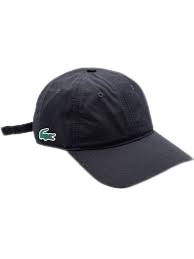
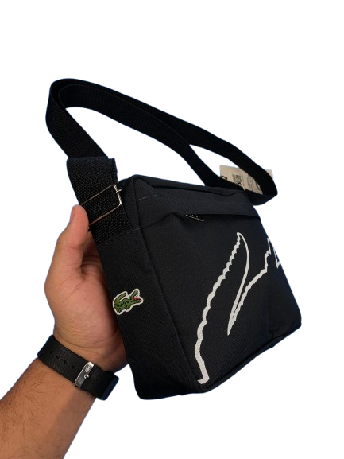
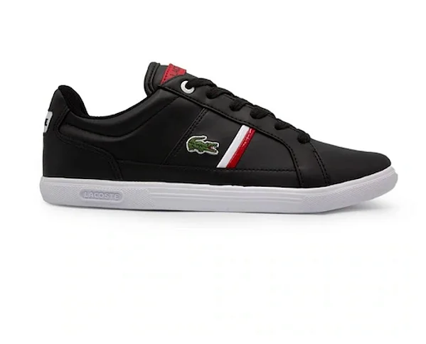

A Lacoste foi fundada em 1933 pelo tenista francês René Lacoste e pelo empresário André Gillier, inicialmente para produzir camisas polo, incluindo o famoso modelo com o logotipo do crocodilo — apelido de René nas quadras. A marca revolucionou a moda esportiva ao combinar conforto e elegância, tornando-se símbolo do estilo casual-chique. Com o tempo, expandiu seu portfólio para roupas, calçados, perfumes, acessórios e artigos esportivos. Reconhecida mundialmente, a Lacoste mantém sua identidade ligada ao esporte, especialmente ao tênis, e ao design atemporal, sendo hoje uma das marcas mais icônicas da moda francesa.
|  |  |  |
|---|